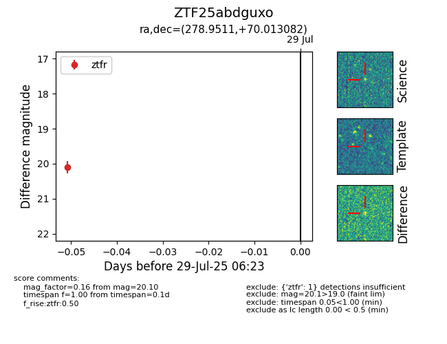

Target ZTF25abdguxo at 2025-07-29 06:23, see:
FINK: fink-portal.org/ZTF25abdguxo
Lasair: lasair-ztf.lsst.ac.uk/objects/ZTF25abdguxo
ALeRCE: alerce.online/object/ZTF25abdguxo
alt names
ZTF25abdguxo (ztf,fink)
coordinates:
equatorial (ra, dec) = (278.9511,+70.01308)
galactic (l, b) = (100.4930,+26.69590)
photometry
last ztfr=20.10
1 ztfr detections
